Page 1 / 原始页码 475
第 7 篇 生态学和行为学
为什么赤道地区的鸣禽生蛋少
有时候，看似怪诞的科学结论往往将人们的视野带入意想不到的领域。1944年，英国鸟类学家 Reginald Moreau 在《朱鹭》杂志上，发表了一篇关于鸟卵的冗长而晦涩的专题论文。Moreau 在非洲工作多年后于20世纪40年代初返回英国任教，不久他就发现，英国鸣禽产卵似乎比它们在非洲的同类多。于是他开始搜集有关全世界界鸣禽产卵数量的信息。
经过分析浩如烟海的数据（他的论文长达51页！），Moreau 得到这样看似怪诞的结论：赤道地区的鸣禽比它们在高纬度的同类生蛋少（见右上图）。例如，赤道地区的鸣禽平均产卵2~3枚，而温带与亚寒带地区鸣禽一般产卵4~6枚，有的种甚至高达10枚。这种趋势是普遍的，全世界的鸣禽都不例外。
如何解释这样一种普遍现象呢？乍一看米，自然选择应赋予进化以最大的适应性——全世界的鸣禽都应该尽可能多产卵。很明显，赤道地区的鸣禽一定没有拜读过达尔文的著作——因为它们产卵的数量只达到它们潜在能力的一半。
为了解决这个问题，1949年鸟类学家 Alexander Skutch 提出了一种解释。他认为鸟类会繁殖适当数目的后代以抵消种群中的死亡个体，任何多余的后代都将造成浪费，所以被自然选择限制到最少。这是一个有趣的观点，但是并不正确，这是因为鸟类数量在赤道地区并不少，而且也和那儿的种群大小无关。
1947年，Moreau 的同事 David Lack 提出了一个更具说服力的解释。Lack 是20世纪最伟大的生物学家之一，他认为很少有鸟类的产卵数量会达到它们在理想状态下的水平，因为自然界的实际条件几乎不可能是理想的；自然选择的倾向于像达尔文所预言的那样使繁殖率（产卵数）达到最大，但这只是在资源限制范围内可能的最大可能水平。出现这种现象并不是会使达尔文感到惊奇。赤道地区鸣禽产卵少是因为这里的资源相对匮乏，竞争相对激烈，鸟类能为后代提供的资源相对较少的缘故。
Lack 接着建立了鸟类产卵数的一般理论。他提出了这样一个合理假设，在一个资源有限的环境中，鸟类只能为后代提供一定总量的食物，于是雏鸟越多，每只雏鸟得到的食物就越少。结果，自然选择得到了一个折中策略，既顾全了后代数量也保证了单个后代所能得到的供给，这个策略使得每个后代均获获得足够食物以活到成年的条件下，达到最大的后代个体。
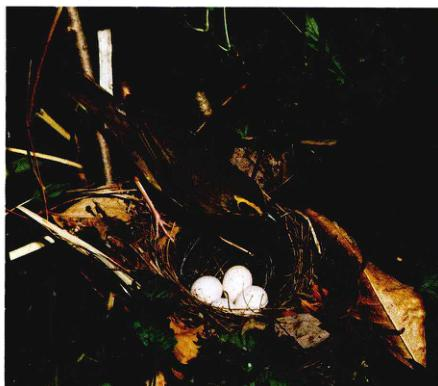
这只背塔基鹭正在专心护理它的蛋 而在赤道地区的同类的蛋却比它少，为什么？
Lack 最优产卵个数理论认为过多的后代将导致营养不良，从而降低了雏鸟存活的可能性。“平均产卵数最终取决于在特定的地区和特定的季节中，母鸟能够成功孵育雏鸟的最大平均数，……产卵多于平均数的雌鸟会因为无力找到足够食物而导致部分或全部后代在离巢前或离巢不久死亡，其结果是，自然选择使这些倾向于多产卵的鸟将没有或只有很少的后代留下来”。
实 验
由于简单而符合常理，Lack 的理论颇具吸引力。但是它正确吗？多项研究对此假说进行检验。典型的做法是把一部分鸟卵从巢中移走，如果 Lack 是对的，那么剩余后代所能得到的食物量应增多，剩余后代的存活率也应提高。然而，通常移走部分鸟卵并无显著影响，因为雌鸟也随之降低了喂食的总量。情况显然比 Lack 的简单理论复杂得多。
当然这样的实验也是有争议的，因为它们直接干扰了鸟巢，很容易对鸟类产生较大影响。很难相信一只照看着六枚卵的雌鸟会丢失一枚卵而视而不见。要确切地检验 Lack 的理论必须排除所有的干扰。
Page 2 / 原始页码 476
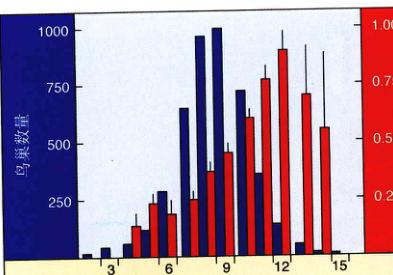
检验 Lack 最优产卵个数理论 在伦敦牛津附近的树林中，科学家发现最普通的产卵数是8枚，尽管12枚卵能够获得最大的成活后代数。
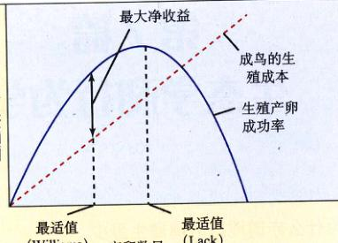
两种最优产卵个数理论 David Lack 理论预言最优产卵数目在生殖成功率最大时出现；George Williams 则预言最优产卵数目在净收益最大，即生殖成本和生殖成功率之差最大时出现。
这样的试验于1987年在英国牛津附近的一片树林中完成了。很多年来，包括 Mark Boyce 教授在内的牛津大学研究人员仔细检测了大山雀——英国乡间常见的一种鸣禽的巢穴情况。他们数出每个巢中的卵数，然后观察有多少后代在离巢后能够生存。22年来，他们耐心地检测了4489个巢穴，并对其中603个进行了人工干预——增加了某些巢穴的鸟卵数，同时减少了某些巢穴的鸟卵数。
结 论
牛津大学的研究人员发现，这些巢的实际平均产卵数是8枚，而有12枚卵的巢却是雏鸟成活数最多的。很明显，Lack 的理论错了，这些鸟的平均产卵数并没有遵循自然选择——产生最大适应性（存活最多的后代）（左上图）。
Lack 的假说看起来十分合理，究竟什么地方出了问题呢？1966年，进化论专家 George Williams 指出，问题在于 Lack 忽视了繁殖的成本（右上图）。如果一只鸟花费过多精力去抚育一窝雏鸟，它可能无法生存到孵育下一窝。照看大的巢穴（卵数多）对母鸟日后的生殖来说是一种巨大的代价。自然选择对产卵数的调节必须考虑到父母的繁殖成本，所以实际产卵数几乎总比最优产卵数（产生最多的存活后代）要少，这正是牛津研究人员所观察到的现象。
然而，即使是 Williams 的“繁殖成本说”也不足以解释那些大山雀的数据。在数据收集的若干年中，每年的天气状况不尽相同。研究人员发现，在气候恶劣的年份，大巢穴中雏鸟的死亡数多于小巢穴。这种“坏年景效应”减弱了产卵多的个体的适应性，Boyce 认为，这至少说明除了“繁殖成本说”，还有其他许多机制决定了“大多数情况下，从长远看鸣禽产卵的数目会少于 Lack 最优值”的现象。
Page 3 / 原始页码 477
第 24 章 种群生态学
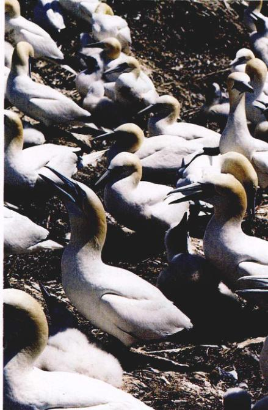
图 24.1 生物以种群的形式出现 该池塘中鹈鹕种群受到生殖策略、竞争、捕食等因素的限制。
生态学是研究有机体与环境之间相互关系的学科，它是生物学中复杂而诱人的一个领域，对每个人都有重大的影响。现在，让我们来探索生态学世界。首先我们来探讨种群的性质，着重于种群的动态性质（图 24.1）。在第25章中，我们将讨论群落及其内部的相互作用；第26章将重点讨论动物行为的方式和成因；第27章将讨论环境对行为的影响及自然选择的作用。
Page 4 / 原始页码 478
24.1 种群是同种个体的自然组合
24.1.1 种群生态学
种群 (population) 是生活在一起的同种个体的集合，个体在种群中生活。本章我们将介绍种群的性质，着重探讨影响一个种群生长或衰退（及其速率）的成因。过去几个世纪内世界人口的爆炸性增长也将是我们介绍的一个焦点。
种群是占有一定地域、存在于一定时间的一群同种个体的自然集合。这是一个富有弹性的定义，我们可以说世界上所有的人类组成一个种群，也可以说一只蚁体内的原生动物是一个种群，还可以说居住在森林中的鹿是一个种群。有时种群的界限很明显，例如一个四面环山的湖中的鳟鱼群；有时却比较模糊，例如被谷地隔开的两片森林中的鹿群，它们的个体会在经往返于两个不同的森林。
种群有3个重要的特征：种群的范围——种群分布的全部地区，种群的分布——种群分布区内个体的分布，以及种群的大小。
1) 种群分布
任何种群，包括人类在内，都不可能遍布全世界每个角落，而是生活在相对限定的地理区域内，如内华达鱂生活在美国西部内华达的温泉中，等足目动物 (Isopod) 则只在新墨西哥州的 Socorro 出现（图 24.2）。另方面，有的种群分布较为广泛。比如某些鲸的种群在南北半球的所有大洋中都能找到。
在第29章中，我们将讨论生物面临的各种来自环境的挑战。没有任何种群的个体能够适应地球上所有的环境。北极熊很好地适应北极的冰天雪地，但在赤道的热带雨林就找不到它们的踪迹。一些细菌生活在黄石公园间歇泉的沸水中，但在附近清凉的泉水里却从来找不不到它们的踪影。每个种群都有自己的特定需求——温度、湿度、食物以及许多其他因素——这些需求决定了它们能在哪里生存和繁殖。另外，即使环境条件适宜，捕食者、竞争者或寄生者的存在也能阻止种群进入某一区域。
2) 种群分布区的扩张与收缩
种群分布区不是静态的，而是随时间不断地变化。这些变化来自于两个原因：其一是环境的变化。例如大约1万年前的第四纪冰期末期，随着冰川的退缩，北美许多动植物的种群向北扩张。同时随着气候变暖，各种在高山上海拔的分布也发生了变化（图 24.3）。
种群扩张还可能有另一个原因。有些物种可以越过原有的种群边界，来到新的栖息地，成为新的种群。例如牛鹭原产非洲，但19世纪末这些鸟出现在了 3218.5 km (2000英里) 以外的南美北部，它们借助强风的帮助横跨大西洋。自此之后它们的种群稳步扩张，如今在美国的大部分地方都能见到这种鸟（图 24.4）。
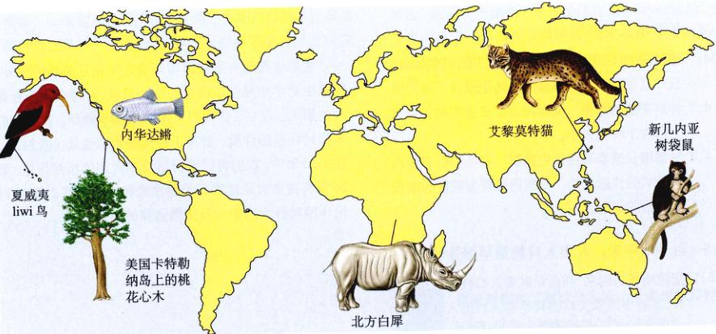
图 24.2 只在一个地区生存的物种 这些物种只存在单一的种群，它们都是濒危物种。如果它们唯一的栖息地遭到破坏，那么这一物种将会灭绝。
资料来源：E. R. Pianka，《进化生态学》，第4版，纽约：Harper & Row, 1987.
Page 5 / 原始页码 479
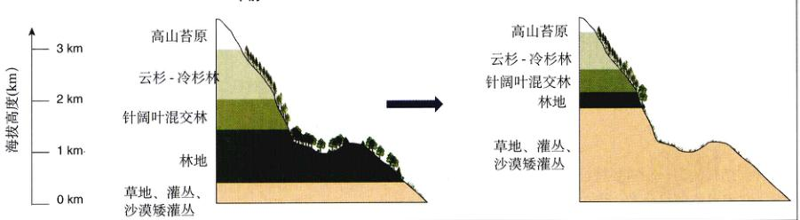
图 24.3 种群分布的海拔变化 15 000 年前的冰川时代比现在冷得多。气候转暖后，喜寒树种的海拔分布变高，生活在其已经适应了的环境中。
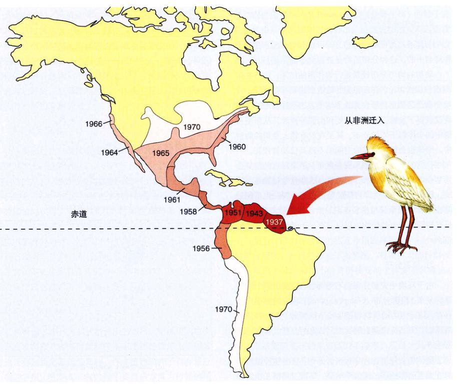
图 24.4 牛鹭种群的扩张 牛鹭跟随牲畜群，以受惊扰的昆虫和小型脊椎动物为食。这种鸟于19世纪末首次来到南美，但是现存最早的标本采集于20世纪30年代，自那以后牛鹭种群扩张均有记录。它们向西、向北进入北美的大部分地方，同时向南到达第斯山脉西麓甚至南美的最南端。
Page 6 / 原始页码 480
种群是生活在一起的同种个体组成的集合，它的分布区域随时间发生变化。
24.1.2 种群分布
种群结构的另一个重要特征是个体在种群内的分布情况。它们可能随机分布、均匀分布或者集群分布（图 24.5）。
1) 随机分布
当个体之间相互作用较弱或各自微环境不同时，个体在种群中呈随机分布。随机分布 (randomly spaced) 在自然界中并不常见，在亚马逊流域的热带雨林中，有一些树种是以该分布方式存在的。
2) 均匀分布
个体通常是以均匀分布 (uniformly spaced) 存在于种群当中的，这种分布通常是资源竞争的结果。
动物的均匀分布经常是行为作用的结果，这将在第27章中详细讨论。许多物种的雄性或两性都会保卫一片属于自己的领土，禁止别人的个体侵入。这样领地的拥有者就获得了食物、水、栖身处和配偶等资源，从而使种群中的个体趋于均匀分布。甚至在没有领土意识的物种中，个体也会保留一定的空间以不被其他动物侵犯。
植物的均匀分布源于资源竞争。距离很近的植株会为争夺阳光、养料和水分而竞争。这些竞争可能是直接的，例如一棵植株为争夺阳光遮挡住另一棵，也可能是间接的，例如两棵植株争夺同一片土地的营养和水分。只有相隔距离大的植物才可以共存，于是形成了均匀分布。
3) 集群分布
由于环境中资源分布的不均衡性，种群中的个体呈集群分布。集群分布 (clumped spaced) 在自然界中广泛存在，这是因为动物和微生物个体倾向于选择特定的微环境，例如特定的土壤类型、特定的湿度或者特定的寄主等。
群体相互作用也会导致集群分布。许多物种以群体的方式生活和迁移，比如羚羊群、鸟群、鹅群、狼群和狮群等。形成群体有许多好处，例如可以提高警惕，以防卫捕食者的袭击、降低迁徙过程中的能量损耗以及有利于成员间的相互熟悉等。
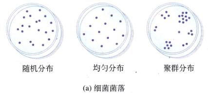
(a) 细菌菌落
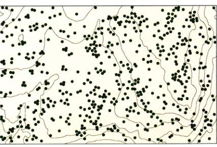
(b) Brosimum alicastrum 的随机分布
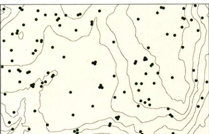
(c) Coccoloba coronata 的均匀分布
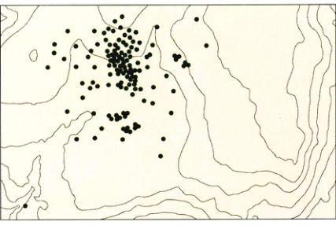
(d) Chamguava schippii 的集群分布
图 24.5 种群分布 离散的不同类型 (a) 细菌菌落的不同分布方式。巴拿马同一地区三种不同乔木的分布类型；(b) 随机分布；(c) 均匀分布；(d) 集群分布。
Page 7 / 原始页码 481
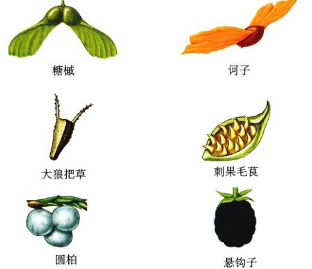
图 24.6 种子适应传播的一些特性 种子进化出诸多不同方法以进行长距离传播。
通常来说，种群密度在种群分布区的中心最大，越靠近分布区的边缘密度越小。这种模式的产生是由种群分布区内部不同地区的环境差异造成的。通常种群最适应的环境条件出现在分布区的中心；随着环境的变化，距中心越远，个体对环境的适应性越低，种群密度也随之降低。当环境恶劣到个体根本无法生存时，即意味着种群边缘的到来。
4) 人为因素
人类通过对环境的改变而使得一些物种的种群分布区得以扩大，比如山狗——一种产于北美大草原的小狼。但不幸的是，人类的活动对大部分物种的影响是负面的。不仅如此，人类活动还导致许多物种的随意分布。许多物种的移植均获得了广泛的成功，例如在1896年，出于对莎士比亚的崇敬，人们希望在纽约市见到所有莎士比亚著作中提及的鸟类，于是100只八哥被引入这个城市，结果到1980年，这种八哥已经活跃于美国的每一个州。类似的例子不胜枚举且逐年递增，遗憾的是，这些外来物种的成功定居常常对本地物种造成侵略性的影响。
5) 分布机制
种群通过多种方式扩散到新的地区。蜥蜴爬到植物上，或者将卵产在其他能够在水面漂浮的物体上，随着海流迁移到距离很远的岛屿。许多植物的种子具有适应传播的特征（图 24.6）：有的种子具有适宜风力传播的结构；有的则黏附在动物的皮毛或羽毛上，被带到远方落地生根；还有的种子被包在果实里，它们被哺乳动物或鸟类取食后，穿过消化道并随着粪便排出到达新的地点。油杉寄生属 (Arceuthobium) 植物（桑寄生科）的种子成熟之后由果实基部剧烈地弹出。虽然成功地实现远距离迁移且建立新种群的几率很小，但是千万年来这样的扩散仍旧在发生着。
24.1.3 集合种群
每个物种都是若干种群组成的网络系统，不同种群之间经常发生个体之间的交换，这样的网络系统称为集合种群。在某些地区，一系列适宜生物种生存的栖息地，被其他个体无法生存的地域隔离分散，从而形成集合种群 (metapopulation)。
集合种群内种群间的相互作用程度取决于各个种群的扩散程度，并且经常是不对称的。规模扩大的种群倾向于输出个体，而较小的种群接受的个体多于其输出。另外，相对孤立的种群不容易接受外来个体。
在集合种群的分区内，并不是所有适宜生物生存的环境在任何时候都有个体栖息。单个的种群可能由于各种原因灭绝，例如流行性疾病的爆发、毁灭性的火灾或者近亲繁殖造成的生育能力下降等。然而，由于其他种群的个体不断迁入，这样的地区最后可以被重新利用。在某些情况下，集合种群所占栖息地的数量反映了现有种群的灭绝速率与新种群的生成速率之间的平衡。
在某些地区，存在一部分适宜种群长期生存和繁衍的栖息地，而其他栖息地的条件相对恶劣，这样的地区种群在整个地区的灭绝。其次，在源-汇集合种群中，物种占有的总栖息地面积要大于非集合种群。随着自然栖息地变得愈发支离破碎，集合种群的研究在保护生物学中的地位将会越来越重要。
Page 8 / 原始页码 482
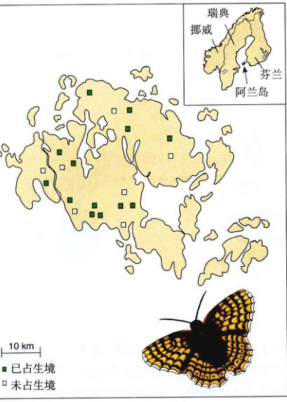
图 24.7 蝴蝶的集合种群 芬兰西南部阿兰岛的豹纹蝶组成集合种群。没有单独的种群能够大到可以长期存在，但是持续的个体迁移使得一部分种群得以存活。另外，持续的新种群的产生可以抵消现有种群的灭绝，虽然近些年来灭绝速率大于新生的速率。
■ 已占生境
□ 未占生境
会出现另一类集合种群结构，称为源 - 汇集合种群 (source-sink metapopulation)。在这类集合种群中，适合种群长期生活的区域（源）将持续输送出个体来补充恶劣栖息地（汇）。如果失去了这样的补充，汇种群将呈现负增长率并最终灭绝。
人们对蝴蝶的集合种群进行了认真的研究（图 24.7）。Hanski 和他在赫尔辛基大学的同事对芬兰西南部 1600 个牧场上的豹纹蝶种群进行了详细研究，结果显示，平均每年有 200 个牧场上的种群灭绝，但同时有 114 个牧场出现了新的种群。导致种群灭绝的因素有很多，包括种群过小、远离新个体的输入源、食物资源匮乏（以牧场花朵的数量表示）以及种群内部基因多样性的缺乏等。研究人员们把种群灭绝大多归因于夏天持续的干旱。由于这些种群没有一个大到能够独立生存，因此芬兰西南部豹纹蝶的持续生存，要求一个持续存在的集合种群网络以及能够使新种群不断得到补充。
集合种群网络的存在对物种分布起着重要的作用。首先，不断地迁入新栖息地能从长远上防止物种的灭绝。如果没有这样的扩散，单独的种群最终将会消失，导致种群在整个地区的灭绝。其次，在源-汇集合种群中，物种占有的总栖息地面积要大于非集合种群。随着自然栖息地变得愈发支离破碎，集合种群的研究在保护生物学中的地位将会越来越重要。
24.2 年龄分布决定了种群的动态特征
种群的另一个重要特征是它的大小。种群大小对于一个种群能否生存有着直接影响。在第31章中我们将看到，小种群比大种群面临更大的灭绝危险。种群内部个体之间的相互作用也与种群的大小和密度（单位面积的个体数）有着密切的关系。
24.2.1 种群统计学
种群统计学 (demography) 是对种群个体进行统计的学科。种群大小随时间的变化可以从两个水平进行研究——整体研究或分块研究。从整体上我们可以确定一个种群的大小是增加、减少还是保持不变。当种群个体的出生率大于死亡率时，种群将会增大；反之，种群将缩小。研究有关这样的问题时，我们便需要将种群划分为几个部分，对每一部分进行单独分析。
1) 影响种群增长速率的因素
种群中雄性和雌性的比例称为性别比 (sex ratio)。种群中新生个体的数目通常与雌性数目直接相关，与雄性数目的关系不是很密切，因为很多物种的雄性可以与多雌性交配。很多物种的雄性通过竞争获取与雌性交配的机会（我们将在第27章中讨论）；其结果是只有少部分雄性能哆与很多雌性交配，而大多数雄性根本没有交配权利。在这样的种群里，以雌性为主的性别比不影响种群增长速率，雄性数目的减少只会改变担任生殖责任的雄性的身份，而并不降低新生个体的数目。
增代时间 (generation time) 指个体出生与该个体繁殖下一代之间的平均时间间隔，它也能影响种群增长速率。不同物种的增代时间差别迥异。通常来说，体积大的物种有着更长的增代时间——在大象增加一代的时间内老鼠可增加几乎 100 代；但这也并非没有例外，比如蝾螈的体形比老鼠小，但它的增代时间却相当长（图 24.8）。在其他条件相同的情况下，增代时间短的种群比增代时间长的种群增长更快；另外，因为与平均寿命有密切相关，如果出生率突然下降，增代时间短的种群其个体数目下降得也会更快。
Page 9 / 原始页码 483
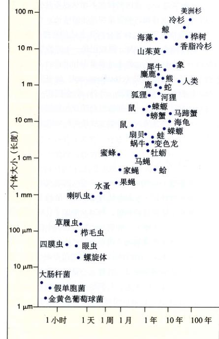
图 24.8 个体大小与增代时间的关系 一般来说，个体较大的动物增代时间较长，但是也有例外。
2) 年龄结构
对于大多数物种来说，个体的繁殖能力和死亡率都随着年龄发生变化。年龄相同的一个群体称为同龄组 (cohort)，种群内每个同龄组都有着自己的特征出生率（或称生殖力）(fecundity) 和特征死亡率（或死亡率）(mortality)，分别定义为一定时间内（如一年）繁殖后代的数目和个体死亡的数目。
同龄组中个体的相对数量称为该种群的年龄结构 (age structure)。由于不同的年龄组具有不同的生殖力和死亡率，年龄结构对种群增长速率有着至关重要的影响。例如，年轻个体比例高的种群将有更快的增长速率，因为进入生殖期的个体比例将不断增大。发展中国家的人口正是这样的例子，这个通过我们在后面的章节中详细讨论。与此相反，如果老年个体在种群中所占比例很高，那么种群将会衰减；这种现象普遍存在于日本和欧洲的许多富裕国家之中。
3) 生命表和种群随时间的变化
生态学家利用生命表 (life table) 估算自然界中种群的变化。构建生命表需要追踪一个同龄组从出生到死亡的全过程，记录每年的出生数目和死亡数目。我们以构建早熟禾 (Poa annua) 的生命表为例。这项研究调查了 843 株个体的生活情况，记录每一段时间内的存活数目和每个存活个体的后代数目，并将这些数据制作成表格（表 24.1）。
在表 24.1 中，第一列表示同龄组的年龄（以3个月
表 24.1 早熟禾同龄组的生命表
| 年龄（以 3 个月为间隔） |
每间隔期初的存活数 |
同龄组存活数目前所占比例（存活） |
间隔期间死亡率 |
每个成活个体的产籽数（生育力） |
生育力 × 成活率 |
| 0 | 843 | 1.000 | 0.143 | 0.00 | 0.00 |
| 1 | 722 | 0.857 | 0.271 | 0.42 | 0.36 |
| 2 | 527 | 0.625 | 0.400 | 1.18 | 0.74 |
| 3 | 316 | 0.375 | 0.544 | 1.36 | 0.51 |
| 4 | 144 | 0.171 | 0.626 | 1.46 | 0.25 |
| 5 | 54 | 0.064 | 0.722 | 1.11 | 0.07 |
| 6 | 15 | 0.018 | 0.800 | 2.00 | 0.04 |
| 7 | 3 | 0.004 | 1.00 | 3.33 | 0.01 |
| 8 | 0 | 0.000 | | | 总计 1.98 |
Page 10 / 原始页码 484
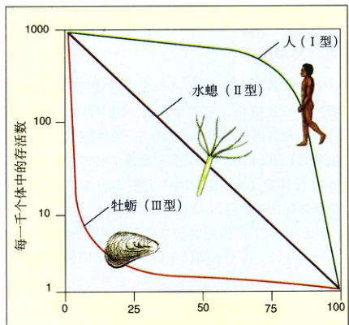
图 24.9 生存曲线 一般纵轴（存活比例）取对数。人类的生涯史为 I 型，水螅为 II 型，牡蛎为 III 型。
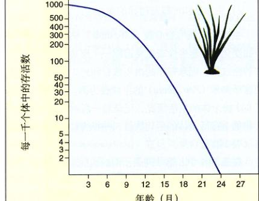
图 24.10 早熟禾 (Poa annua) 同龄组的存活曲线 死亡率随时间以恒定速率增长。
为单位），第二列、第三列分别表示在此年龄段开始时，仍存活个体的数目及其占最初个体数目的比例，第四列代表此年龄段中的死亡率 (mortality rate)，第五列表示此年龄段中每个存活个体平均产生的种子数，最后一列表示整个同龄组（843个个体）在此阶段中产生的平均种子数。
我们可以从生命表中得到许多信息。在这个例子中，可以看到死亡的几率随年龄的增长而增大，产生的后代数也随年龄上升。将最后列数字相加，我们得到了最初的同龄组产生的所有后代的总数。这个数字约为 2，意味着每个个体大约产生两个新个体。在平衡的情况下，这个数字是 1.0，此时种群既不增长也不减少。在这个例子中，可以看到该种群正在迅速的增长。
大多数情况下，生命表分析比上述的要复杂得多。首先，除了短命的物种外，跟踪记录一个同龄组从出生到最后一个个体的死亡的全过程是十分困难的，取而代之的方法是进行截面式 (cross-sectional) 的研究，观测所有同龄组在一年中的情况。另外，许多因素——例如新生个体有可能在上一代同龄组全部死亡之前就开始繁殖下一代——都会使判断种群发展趋势的问题变得更为复杂。
4) 生存曲线
生存曲线 (survivorship curve) 可以用来反映种群年龄分布的某些特征。生存曲线表示某个年龄的个体数目占该种群总体数目的比例。图 24.9 举出了几种不同类型的生存曲线。水螅是一种腔肠动物，它的个体在任何年龄段都有几乎相同的死亡概率，所以生存曲线是一条直线（II 型）。牡蛎与植物相似，它们繁殖很多后代，但只有很少一部分能够存活；然而，一旦它们存活下来并成长为有繁殖能力的个体，它们的死亡率是极低的（III 型）。人类婴儿的死亡率也相对较高，但同许多其他动物一样，在过了生年年龄之后，人类的死亡率急剧升高（I 型）。从早熟禾的数据分析，它的生存曲线类似于 II 型（图 24.10）。
24.3 生活史反映了繁殖与存活之间的平衡
自然选择要求下一代能够获得最多的存活数目。有两个影响存活数量的因素：个体寿命和每年的生育数量。在与同类竞争、躲避敌害、捕捉食物的同时，为什么生物体不在出生之后立即开始繁殖，并且每次尽可能的生育后代，倾尽全力抚育它们并且在一生之中不断地如此重复呢？答案很简单：充分利用有限的资源，这是所有生物都必须面临的。于是，生物体将对资源进行分配，或者用于目前的繁殖，或者用于保存自身以为日后的繁殖作准备。
Page 11 / 原始页码 485
24.3.1 生殖成本
生物体的整个生命循环构成的生活史，所有的生活史都涉及意义重大的平衡过程。由于资源有限，物种发生有利于繁殖对策的改变，导致生存能力的降低，并影响日后的繁殖。例如，一株道格拉斯冷杉结出较多的球果，这意味着目前具有旺盛的繁殖力，但同时它的生长速率将减慢，因为所结球果数多的树木大小的函数，生长速率减慢将使未来的球果数减少，繁殖力降低。类似地，产卵多的鸟很容易当年死去或者来年产卵数减少（图 24.11）。相反，延缓生育的个体成长得更快，体积也更大，并且未来的生育能力得到提高。
在一个设计巧妙的试验中，研究人员改变了京燕巢中卵的数目（图 24.12）以观察鸟类繁殖行为的变化。那些卵数减少的鸟第二年产卵更多，而那些卵数增加的鸟第二年产卵减少。生态学家把这种因为目前的生殖而导致未来繁殖力下降的现象称为生殖成本 (cost of reproduction) 的消耗。
自然选择决定了那些成功繁殖最多后代的个体的生活史。当生殖成本很低时，个体应当尽可能多地繁殖。低的生殖成本发生在资源丰富时，这样繁殖后代就不会对继续生存和下一年繁殖造成威胁。整体死亡率高也会造成低的生殖成本，因为这时个体活到下一个哺育季节，所以增加繁殖对未来不会造成太多的影响。
另一方面，当生殖成本较高时，它将显著影响个体生存或降低未来繁殖力。此时，通过减少生殖、加快生长以提高生存率能够使个体在一生中的繁殖成功率达到最大。
1) 对每个后代的投入
从自然选择的角度看，后代中能够存活到繁殖期的数量要比后代的总个体数量更加重要。
分配给每个后代的单位资源涉及一个重要的生殖平衡。假设投入后代的资源是有限的，那么后代的数目与每个后代的大小就存在着一个平衡（图 24.13），这个平衡的存在通过侧斑犹他蜥的实验得到了证实。侧斑犹他蜥通常平均产卵 4.5 枚，当通过手术取出一部分卵，使雌蜥只产 1~3 枚时，每只卵的卵黄将会增多，卵的体积也比正常的变大。
许多物种后代的大小对它们的生存有着关键作用。一般地，大个体存活率高。生育很多存活率很小的后代并不会合算，但是只繁殖一个后代也不是高明的策略，因为这样虽然保证了后代的质量，但数量却太少了。而介于二者之间的折中方案是最优的，即繁殖一定数量的...
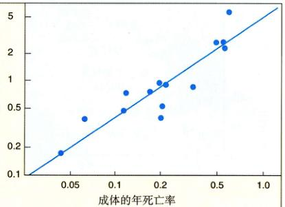
图 24.11 繁殖的代价 鸟类增加的生殖投入与增加的死亡率有关。每年生育后代多的鸟当年的死亡率更大。
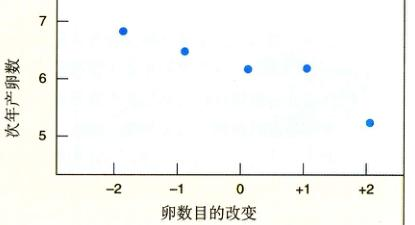
图 24.12 一生中的繁殖事件 给京燕巢中添加卵（增加雄鸟抚育后代的负担）使得次年产卵减少，移走卵使得次年产卵增加。这个实验证明了当前生殖努力与未来生殖成功的平衡关系。
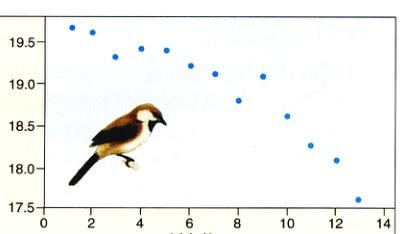
图 24.13 孵卵数与后代大小的关系 大山雀雏鸟的大小与母鸟产卵数成反比关系。卵越多，每只雏鸟所得食物越少。
后代，并保证这些后代能够成活到生育期。这与前面提到的产卵数与父代生殖成本之间的平衡类似，只是这时父代的代价体现了给予每个子代投资的资源量。
2) 生存期中的生殖事件
寿命与生殖力之间的平衡在很多生物生活史中发挥了重要作用。一年生植物和大部分昆虫将所有精力耗于一次大的繁殖事件，之后即死去，这种适应称作单次生殖。
Page 12 / 原始页码 486
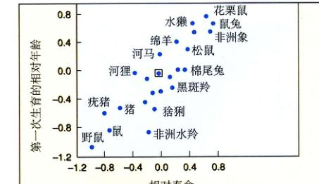
图 24.14 初次繁殖年龄 在哺乳动物中，第一次生育年龄与出生时的预期寿命成正比。每个点代表一个物种，这些数值与物种身体大小有关。
殖 (semelparity) 的生活史。另一种适应方式是多次生殖 (iteroparity) 的生活史，这些物种在若干繁殖季节中多次生殖。每年都繁殖的物种不必避免在一次生殖中投入过多精力，否则将难以继续生活和繁殖。单次生殖，或者称为“大爆炸”式的生殖通常出现在寿命短暂，再次生育期间不易存活的环境中，例如生长在恶劣环境中的植物。另外，单次生殖还出现在生殖成本很高时发生，比如太平洋大麻哈鱼，它们必须逆游到出生地的地方产卵。生物选择了竭尽所能完成繁衍而不有所保留以备将来生存和繁殖的方式。
3) 初次生殖的年龄
在哺乳动物和许多其他动物中，寿命长的物种初次繁殖较晚（图 24.14），例如鸟类在消耗高生殖成本之前要度过雏鸟时期。对于长寿动物来说，拥有幼年期的优势相对大于其存活与生长的资源损耗；另一方面对于短寿的动物，迅速生殖比拥有幼年期更为重要，所以它们繁殖较早。
24.4 种群增长受环境制约
24.4.1 繁殖潜力
无论繁殖多少后代，种群均保持一个相对恒定的大小。在第1章中我们已经看到，达尔文的自然选择学说就是部分地建立在这个看似矛盾的基础之上的。自然选
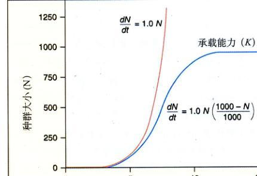
图 24.15 两种种群增长模式 红线代表指数增长模式，r = 1.0。蓝线代表 Logistic 增长模式，r = 1.0, K = 1000。在此模式中，种群首先呈指数增长，由于资源有限，死亡率随着种群的扩大而升高，种群增长逐渐减速。当死亡率与出生率相同时，种群停止增长。承载能力 (K) 最终取决于环境可提供的资源。
图 24.16 一个迅速增长的种群 欧洲紫千屈菜 (Lythrum salicaria) 在北美上千平方英里的沼泽和湿地蔓延开来。它于1860年前引入，对当地很多植物、动物都有负面影响。
择的结果使得一些个体的繁殖机会小于其他的个体。要进一步理解种群，我们必须考虑它们如何增长，以及自然界中哪些因素限制种群增长的。
1) 指数增长模型
种群的实际增长率 r，等于出生率 b 与死亡率 d 的差，另外还与迁入迁出的个体有关，即净迁入率(i)和净迁出率(e)有关，因此：
r = (b - d) + (i - e)
个体迁移对种群增长率产生重要的影响。例如，20世纪末的几十年内美国人口的迅速增长主要就是因为
Page 13 / 原始页码 487
移民，增长的人口中只有不到一半是本土居民生育的结果。
最简单的种群增长模型假设种群无限制地以最大速率增长。这个速率称为繁殖潜力 (biotic potential)，此时种群没有生长速率的上限。用数学语言表示为：
dN / dt = riN
其中 N 是种群中的个体数，dN/dt 是个体数随时间的变化，ri 是种群的内禀自然增长率，是一个种群的固有能力。
任何种群的固有生长都是指数型的（图 24.15），即使自然增长率是恒定的，个体实际数目也在随着种群的扩大而迅速增加。不受限制的指数增长模式是导致种群爆发。一对家蝇每代产卵 120 枚，每年繁殖 5 万亿后代；10 年内它们的后代将覆盖整个地球表面达 2 米厚！实际上，这种无限制的增长模式只可能在短期内，一般是当生物体到达了一个资源丰富的新栖息地的时候才能够发生（图 24.16）。例如，蒲公英从欧洲第一次飘落到北美的田地、草坪和牧场时；藻类开辟了一个新形成的池塘时，或者第一批大陆生物到达刚从海底新生的岛屿时，会发生上述短期的无限增长。
2) 承载能力
无论种群增长如何迅速，它们最终都会达到一个极限，这是因为存在许多重要的环境因素的制约，如阳光、水分或营养等。某个栖息地的种群大小最终会达到一个稳定的水平，称作该栖息地的承载能力 (carrying capacity)，用 K 表示，它表征了环境所能容纳的最多体数。
3) Logistic 增长模型
当种群接近环境的承载能力时，它的增长速率将显著降低，因为此时可供新个体利用的资源变得越来越少。这种被一个或多个环境因素限制的种群增长模式可用下列的 Logistic 生长方程表示：
dN / dt = rN ((K - N) / K)
在此方程中，N 为种群个体数，dN/dt 是种群增长率，它不仅是种群固有特征的函数，还受到资源因素的影响，这种影响可用一个表征剩余资源的项 ((K - N) / K) 来度量。当 N（种群的个体数量）增大时，这个系数 (K - N) / K 乘积变得越来越小，种群的增长率逐渐降低。
在这个数学方程中，当 N 趋近于 K 时，种群增长率 (dN/dt) 逐渐减慢；当 N=K 时，种群增长停滞（图 24.15 中的蓝线）。用 N（种群的个体数）对 t（时间）作图，可以得到一条 S 形生长曲线 (sigmoid growth curve)，这反映了许多种群的特征。此曲线形似字母“S”。当种群大小接近环境的承载能力时，种群的增长速率减慢，最终停止生长（图 24.17a）。
许多情况下，种群的增长表现出 Logistic 曲线的趋势，不仅在实验室里，自然界中的许多种群也是这样（图 24.17b）。但也有种群并不完全符合 Logistic 生长曲线，很快我们将会看到，还有许多其他的种群增长模式。
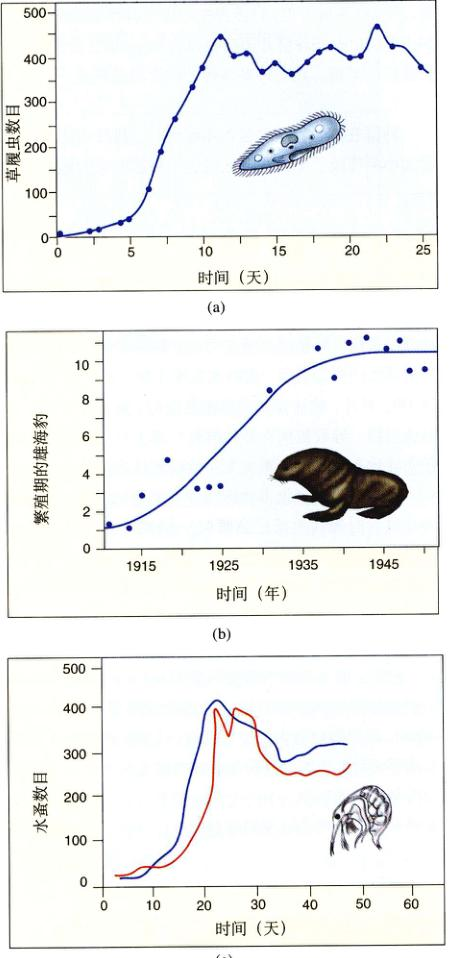
图 24.17 大部分自然种群呈现 Logistic 增长 (a) 实验室培养的草履虫；(b) 阿拉斯加圣保罗岛的海豹 (Callorhinus ursinus)；(c) 实验室培养的两个水蚤 (Bosmina longirsotris) 种群。值得注意的是，当种群超过了环境的承载能力时，种群逐渐缩小到能够维持稳定的程度。
Page 14 / 原始页码 488
24.4.2 种群密度的影响
种群增长速率受种群大小的影响，其中一个重要的原因是许多过程具有密度依赖性 (density-dependent)。当种群增长接近环境的承载能力时，种群密度的增加造成异常激烈的资源竞争，这时出生率下降，死亡率上升（图 24.18）。另外，被捕食者种群密度高时，捕食者将更容易捕获猎物，导致被捕食者种群死亡率上升。高种群密度还会导致有害物质积聚，人类活动就是典型的例子。
动物行为的变化也会影响种群的增长速率。一些啮齿动物有时表现出反社会倾向：凶猛斗狠并且生育减少。这些行为变化是由激素活动导致的，但根本原因尚不清楚，很可能是进化过程中一种对资源短缺条件的适应。另外，在高密度种群中，个体经常性地迁出以寻找更好的生存条件，也会导致种群增长率的下降（图 24.19）。
然而，并不是所有密度因素都是制约性的。有时候高密度种群有利于种群增长，这就是阿里效应 (Allee effect)。阿里效应有多种表现形式，许多物种依靠大种群来威吓天敌，也有的物种聚集成高密度种群，为繁殖行为提供必需的刺激。另一个明显的事实是，如果种群分布稀少，个体将难以找到配偶。
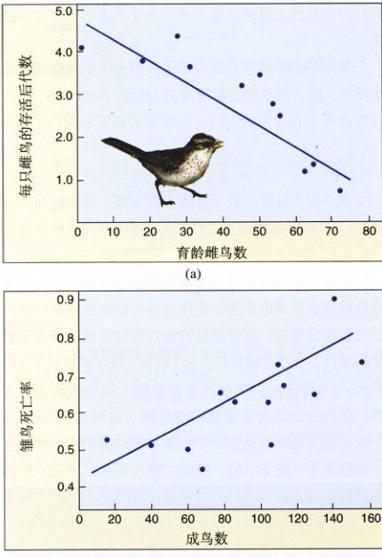
图 24.18 曼达特岛上鸣雀 (Melospiza melodia) 种群的密度制约性 随着种群增大 (a) 生殖成功率降低；(b) 死亡率升高。
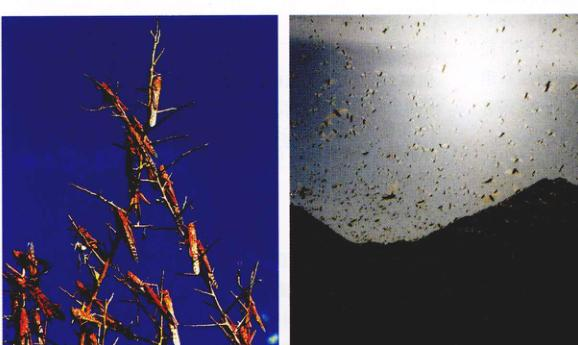
图 24.19 种群密度效应 迁徙性蝗虫 (Locusta migratoria) 在非洲和欧亚泛滥成灾。在高密度的种群中，蝗虫具有不同的激素和生理特征，并成群结队的大规模行动,30年来最严重的蝗灾发生在1988年的北非。
Page 15 / 原始页码 489
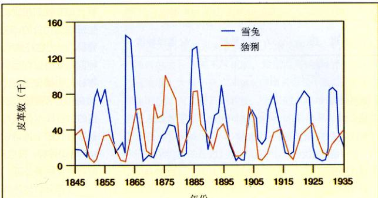
图 24.20 雪兔和猞猁的种群周期相互关联 这些数据来自于加拿大哈得森湾地区的皮货记录。雪兔的种群周期与雪兔同步，只是稍稍落后。
1) 非密度制约效应
种群增长速率有时并不符合 Logistic 增长曲线，这主要是因为种群增长受到非密度制约效应 (density-independent effect) 的调控，即增长率受到除种群大小外其他因素的限制。
许多非密度因素将影响种群的增长，其中最常见的是环境因素，例如严冬、干旱、风暴、火山喷发等，这时种群的生长主要受到环境条件而不是种群的大小的影响。环境适宜时增长迅速，而在环境恶劣时种群几乎消失。
2) 种群周期
有些种群的增长并不符合 Logistic 方程，它们表现为周期性的增长或减少。生态学家们从19世纪20年代起，对兔种群的周期性变化，发现美洲野兔 (Lepus americanus) 的种群变化存在在10年左右的周期（实际上是 8~11 年），在一个典型的周期内，它们的数目会降低 10~30 倍，甚至 100 倍。这种现象的发生与两个因素有关：食用植物和捕食者。
(1) 食用植物：美洲野兔喜食柳树和桦树的嫩枝。当野兔密度增加时，这些嫩枝的数量将会减少，迫使野兔以高纤维（低质量）的植物为主，导致幼兔出生率和成活率降低，最终其种群增长率降低。另外，野兔需要花费更多的时间寻找食物，这使它们更容易被捕食者抓获。结果是美洲野兔和柳树、桦树嫩枝数量都将锐减。这些嫩枝需要 2~3 年时间才能恢复到原来的水平。
(2) 捕食者：美洲野兔的主要捕食者是加拿大猞猁 (Lynx canadensis)。加拿大猞猁的种群变化也在存在的10年的周期，这与野兔种群的变化周期相吻合（图 24.20）。当野兔数量增加时，加拿大猞猁的数量也随之增加；当野兔减少时，因为缺乏食物，加拿大猞猁的数量也会减少。
究竟是什么因素造成了这种捕食者和被捕食者的振荡现象的呢？是因为野兔数量增加导致的食物缺乏（野兔-植物周期）还是因为猞猁数量增加导致的野兔数量减少（野兔-猞猁周期）？1992年，C. Krebs 和同事们在加拿大的 Yukon 野外基地进行了实验，结果表明，如果提供食物（无食物效应）并且驱除捕食者（无捕食者效应），野兔的数量在增加 10 倍后将保持不变——此时种群没有周期性的振荡现象。然而，只要引入一种因素——没有捕食者，也不提供食物（食物的单独效应）；或者有捕食者，同时也提供食物（捕食者的单独效应），原有的周期性就会恢复。可见，这两个因素均能影响种群行为，种群周期性变化是由它们相互作用而决定的。
以前认为这种周期性变化的种群是很少见的，然而最近的一篇综述对 700 项长期（25年以上）研究进行了回顾，结果表明，种群的周期性并非鲜见，将近 30% 的研究——包括鸟类、哺乳类、鱼类和甲壳类——显示种群大小随时间发生了周期性的变化，虽然这些周期大部分都没有上述野兔和猞猁的那么明显。
24.4.3 种群增长速率与生活史模型
我们已经看到，一些物种的种群大小稳定维持在环境承载能力的附近，而另一些物种的种群远低于其环境承载
Page 16 / 原始页码 490
表 24.2 r-选择和 K-选择的生活史适应
| 适应 |
r-选择种群 |
K-选择种群 |
| 初次生育年龄 | 早 | 迟 |
| 寿命 | 短 | 长 |
| 成熟时间 | 短 | 长 |
| 死亡率 | 高 | 通常低 |
| 每次生殖的后代数目 | 很多 | 少 |
| 一生中的生育次数 | 通常一次 | 通常几次 |
| 亲代抚养 | 没有 | 精心照顾 |
| 后代或卵的大小 | 小 | 大 |
资料来源：E. R. Pianka，《进化生态学》，第4版，纽约：Harper & Row, 1987.
能力，并呈现波动。从我们对生活史的讨论可以得知，影响这些物种的选择因子 (selective factor) 有很大不同。接近承载能力的种群面临激烈的资源竞争，而对于远在承载能力之下的种群，资源则相对丰富。
我们能够看到这种差异造成的结果。当资源有限时，生殖成本很高，自然选择的结果是使竞争能力强且能够更加有效利用资源的个体得以存活，这些适应是以低生殖率为代价的。这样的种群称为 K-选择 (K-selected) 种群，因为在环境承载能力的附近，具有这种适应力的种群能够得以存活。表 24.2 列举了一些典型的 K-选择物种，包括椰子树、美洲鸣鹤、鲸和人类等。相反地，远在环境承载能力之下的种群具有十分丰富的资源。它们的生殖成本很低，自然选择的结果是使那些能够繁殖最多后代的个体得以存活。这样的种群称为 r-选择 (r-selected) 种群，被选择的是生殖能力最强的个体。r 选择的物种包括蒲公英、蚜虫、老鼠和蟑螂等（图 24.21）。
大部分自然种群包括 r 选择的成分也包括 K 选择的成分，很少有种群是纯粹的 r 选择或 K 选择。表 24.2 列出了纯粹的 r 选择种群和纯粹的 K 选择种群的一些特征，这些特征是一般规律，也有例外存在。
图 24.21 指数增长的结果 所有生物的潜在繁殖能力都能产生实际存在的种群大得多的种群。德国蟑螂 (Blatella germanica) 是一种主要的家居害虫，每 6 个月可以繁殖 80 后代。如果每只蟑螂都能存活三代，那么厨房就会变成如图所示的假想的恐怖景象 (Smithsonian 自然历史博物馆描绘)。
24.5 近300年来，人类人口数量呈爆炸性增长
24.5.1 指数增长的到来
人类表现出很多 K-选择生活史的特性，包括生育后代少、性成熟晚和对子女的悉心照顾等。这些生活史特征是在人类进化的早期形成的，那时的有限资源限制着人类种群的规模。纵观人类历史的大部分时期，我们的人口的数量一直受到食物供应、疾病和捕食者的调控。洪水、瘟疫以及干旱严重影响了早期人口的增长，那时的人口增长十分缓慢。距今 2000 年前的全球总人口数大约为 1.3 亿；之后 1000 年内人口数目仅翻了一番；到了 1650 年，人口再次翻番，达到 5 亿。16 世纪之前，人口增长极为缓慢，在这一点上，人类和其他许多以 K-选择生活史为主的物种面临同样的命运。
然而，自 18 世纪开始，科学技术的进步使得人类能够获得足够的食物，制造武器以驱赶敌害，并可以治疗很多疾病。同时，居住条件和储存能力的改善使人类的生活不再过分依赖于气候。这些变化使得人类扩大了其栖息地的承载能力，从而挣脱了 Logistic 增长的束缚，重新进入了 S 形增长曲线的指数部分。
过去 300 年内，人类突破了环境因素的限制，人口呈现爆炸式增长。在这段时期内，虽然出生率依然保持每年 3% 左右，但死亡率却由原来的每年的 2% 急剧降到
Page 17 / 原始页码 491
1.3%。出生率和死亡率之差意味着人口以每年约 2% 的速率增长。
目前的人口增长率已经降到了 1.4%。这个增长率看似不大，但是它却产生了现在的 60 多亿人口（图 24.22）！按照这种增长速率，世界人口每年将增加 7 700 多万，39 年内就会再翻一番。在第30章中，我们将详细讨论目前的人口水平与增长速度带来的严重隐患。
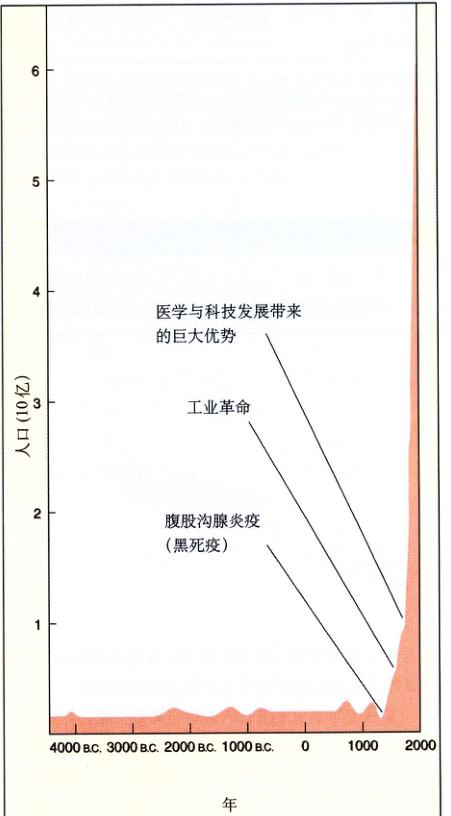
图 24.22 人口发展史 暂时性死亡率正增加的事件，即使像 1400 年的黑死病那样严重，也不会造成长久的影响。人口的爆炸性增长始于 18 世纪初的工业革命，自那以后死亡率一直很低。目前世界人口有 60 多亿，按照现在的增长速率，39 年后就会翻一番。
1) 人口金字塔
进入 21 世纪以来，全球人口增长依然很快，但是每个地区的增长速率不尽相同。像墨西哥这样的国家，人口出生率大大高于死亡率，人口增长很快（图 24.23）；而其他国家的人口增长则较慢。未来的人口增长速率可以通过人口金字塔 (population pyramid) 来估算。人口金字塔是表示各年龄段人口数的条形图，通常男性位于左边（纵轴）的左边，女性位于右边。在多数人口金字塔中，老年妇女都比老年男子多，这是因为大部分地区女性平均寿命都比男性长。
通过这样的人口金字塔，我们可以预测某一地区人口变化趋势。一般来说，长方形的人口金字塔表示一个国家人口稳定，既不会增加也不会减少。三角形的人口金字塔表示一个国家未来将有人口迅速增长的趋势，因为大部分的人口即将进入生育年龄。倒三角形的人口金字塔则是将衰减的标志。
1990 年美国与肯尼亚的人口金字塔如图 24.24 所示。美国的人口金字塔几乎是长方形的。55~59 岁的年龄组出生于大萧条时期，个体数目比它前后的年龄组都要少。25~44 岁的同龄组组成所谓的“婴儿潮” (baby boom)。长方形的人口金字塔说明了美国人口增长并并不快。与此相反的是肯尼亚呈现明显的三角形人口金字塔，它预示着未来的人口爆炸，估计在 20 年内肯尼亚的人口就会翻一番。
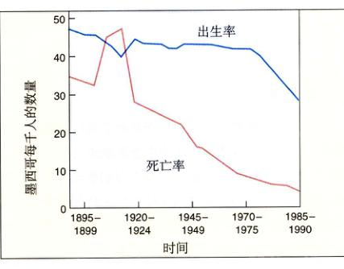
图 24.23 墨西哥人口的增长趋势 20世纪，墨西哥人口的死亡率（红线）持续下降，出生率（蓝线）直到 70 年代都比较平稳，出生率与死亡率的差造成高增长率。从 1970 年开始，政府采取降低出生率的措施，但是人口增长率仍然较高。
Page 18 / 原始页码 492
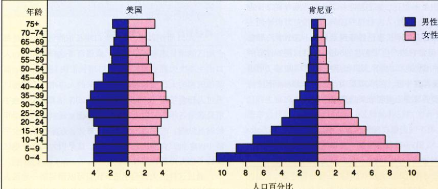
图 24.24 1990 年的人口金字塔 人口金字塔反映了人口的年龄结构。肯尼亚的人口金字塔基部很大，因为这个国家有许多青少年。当这些年轻个体进入生育阶段，人口将会迅速增加。美国的人口金字塔中部隆起（25~44 岁的同龄组），代表了 1945 - 1964 年间的“婴儿潮”时期，此时的出生率大大增加。
表 24.3 1996 年发达国家和发展中国家人口数据对比
|
美国 (发达国家) |
巴西 (中等发展中国家) |
埃塞俄比亚 (贫困发展中国家) |
| 生育速率 (%) | 2.0 | 2.8 | 6.8 |
| 人口翻一番时间 (以现有速度, 年) | 114 | 41 | 23 |
| 婴儿死亡率 (每千婴儿) | 7.5 | 58 | 120 |
| 平均寿命 (年) | 76 | 66 | 50 |
| 人均年收入 (美元, 1994) | 25 860 | 3370 | 130 |
2) 不确定的未来
地球上快速增长的人口可能是对未来生物圈——地球上所有生物及其环境构成的生态系统集合——的最大挑战。人类每年给地球增加 7700 多万生命，即每 5 天就有 100 万，每分钟就有 150 个！在高人口增长的国家中，人口增长更加令人惊愕（表 24.3）。例如印度，1996 年有 8.53 亿，到 2020 年将会超过 14 亿！
各国人口增长率差异显著，这是世界人口增长的一个重要特点。20 世纪 90 年代新增的人口中，有 90% 生活在发展中国家（图 24.25）。这使得发达国家人口占全球人口的比例日趋下降。1950 年全球有 1/3 的人口生活在发达国家，1996 年下降到只有 1/4，2020 年这个比例将下降为 1/6。这样世界人口增长将集中在最落后的地区，而这些地区又恰恰缺乏应对人口压力的相应条件。
发展中国家快速增长的人口将导致贫富差距的进一步加大。当前，占世界 23% 的发达国家人口的人均收入为 17 900 美元，拥有世界资产的 85%，而 77% 的发展中国家人口的人均收入仅有 810 美元，拥有的资产只占全世界的 15%。全世界每年消耗的能量，有 80% 用于发达国家，发展中国家只利用其中约 20%。最令人担忧的是，全世界 94% 的科学家和工程人员生活在发达国家，只有 6% 生活在发展中国家。于是，未来这些缺少科学家和技术人员的发展中国家，将不得不面临由于人口爆炸性增长带来的诸多问题，这是一个可怕的事实。
Page 19 / 原始页码 493

图 24.25 1950 年以来世界大部分人口增长发生在发展中国家 发展中国家人口的年龄结构预示这种趋势还将继续。据世界银行和联合国的乐观估计，如果各国采取限制出生率的政策，世界人口将在达到 100 亿后保持相对平稳。如果人口以 1996 年的速率增长，2100 年全世界将有 300 亿人口！
没有人知道地球能否承受得住现今的 60 多亿人口，我们更加难以预料未来拥有更多人口的地球将会是什么样子。正如第 30 章将要指出的，全球生态系统已经处于巨大的压力之下。在这种压力下，我们不能指望，期望地球无休止地扩大它的承载能力，事实上，我们已经接近了这个极限了。控制未来人口的增长不可避免，出生率和死亡率必须达到平衡。如果我们不希望通过增加死亡率（这将是一场灾难）以达到控制人口增长的目的，就必须大范围地限制人口的出生。在这个严峻的时刻，全世界都必须为降低出生率做出巨大的努力。
Page 20 / 原始页码 494
小 结
24.1 种群是同种个体的自然组合
- 种群是在一定区域内生活的一群同种个体的集合，种群的分布区随着时间发生变化。
- 种群中的个体可以随机分布、均匀分布或者集群分布。
24.2 年龄分布决定了种群的动态特征
- 种群生长速率是其年龄结构的函数，与性别比也有一定关系。
- 生存曲线表征了不同种群的死亡率特征。
24.3 生活史反映了繁殖与存活之间的平衡
- 生物体会在目前的繁殖和生长投入与未来的繁殖投入之间进行平衡。
24.4 种群增长受环境制约
- 种群大小的净变化由出生率与死亡率之差决定，并与个体的净迁移有关。种群固有的增长速率称为种群的繁殖潜力。
- 许多种群的增长曲线呈现 S 形，开始时增长较慢，随后进入快速增长期，达到环境的承载能力时停止生长。
- 当到达环境的承载能力时，密度因子限制制约种群的生长速率。
- 一些非密度因子也对种群有着重要的影响。
- r-对策种群以多生育、快增长为特征，K-对策的种群大小受环境承载能力限制，后代少、增长慢。
24.5 近300年来，人类人口数量呈爆炸性增长
问 题
- 种群个体的 3 种分布类型分别是什么？哪一种在自然界分布最广泛？为什么？
- 集群分布的原因是什么？
- 什么是生存曲线？描述 3 种生存曲线并举例说明。
- 什么是种群统计学？生命表有什么意义？
- 为什么有些鸟的产卵数目比拉克的理论的最优值少？
- 如何定义一个种群的繁殖能力。种群实际增长率的定义是什么？有哪两个因素对它有影响？
- 什么是指数增长？这种增长什么时候发生？举例说明。
- 什么是承载能力？它是一个静态参量还是一个动态参量？
- K-选择种群和 r-选择种群有何区别？
- 如何通过人口金字塔预测人口的增长趋势？
媒体资源
- 种群概述
- 种群特征
- “科学”专栏：爱尔兰的蛇
- “科学”专栏：猎鹿
- 技能测验：生存曲线
- 种群生长的策略
- 种群大小的调控
- 科学家视角：发现可危的珊瑚礁
- “科学”专栏：马尔萨斯错了吗？
- 技能测验：种群生长
- 种群的生长
- 人类种群